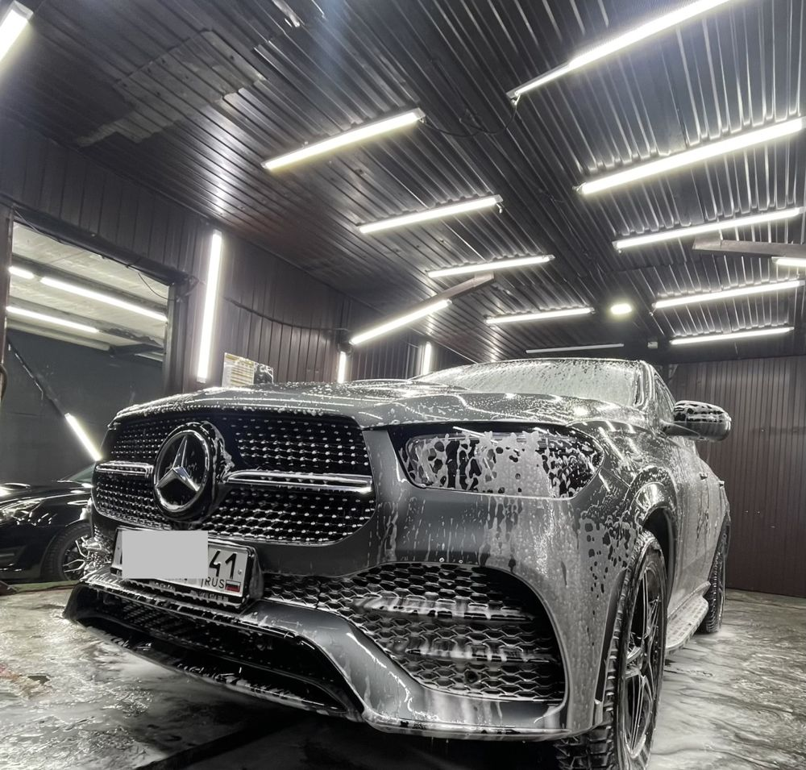
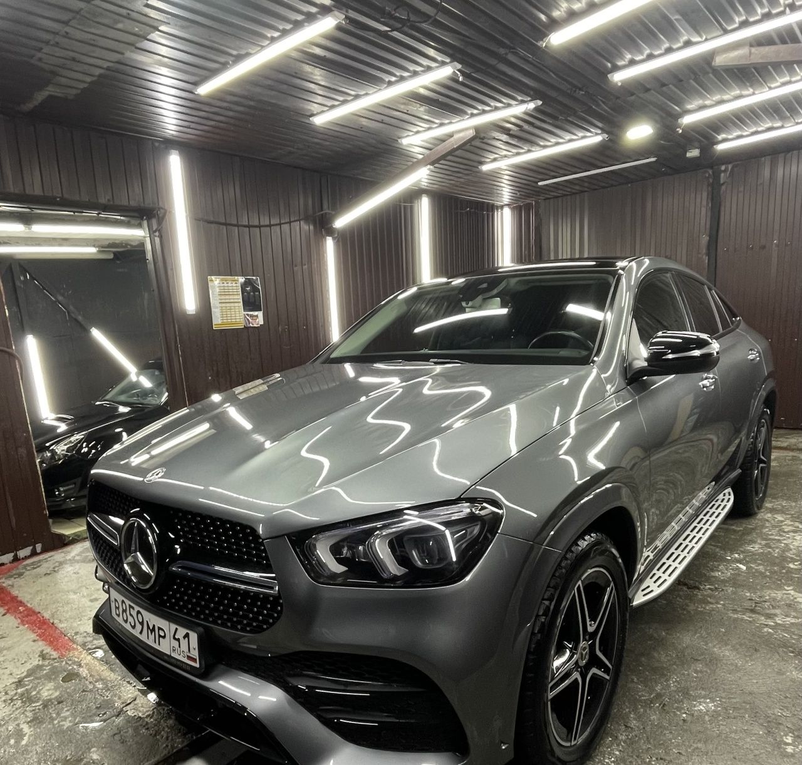
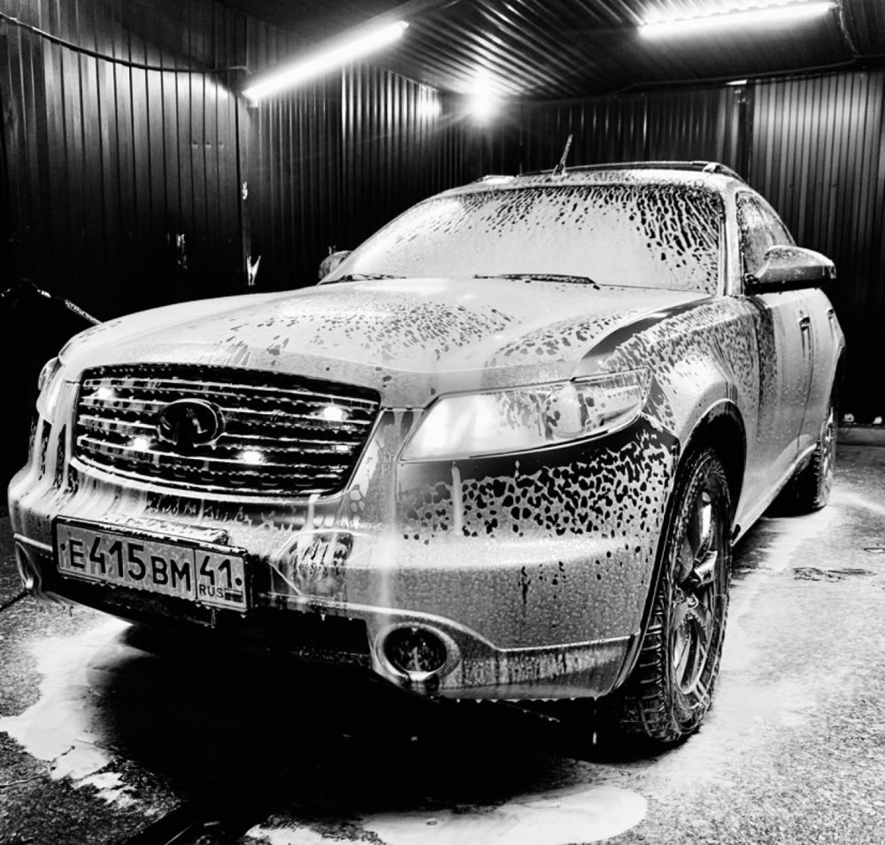
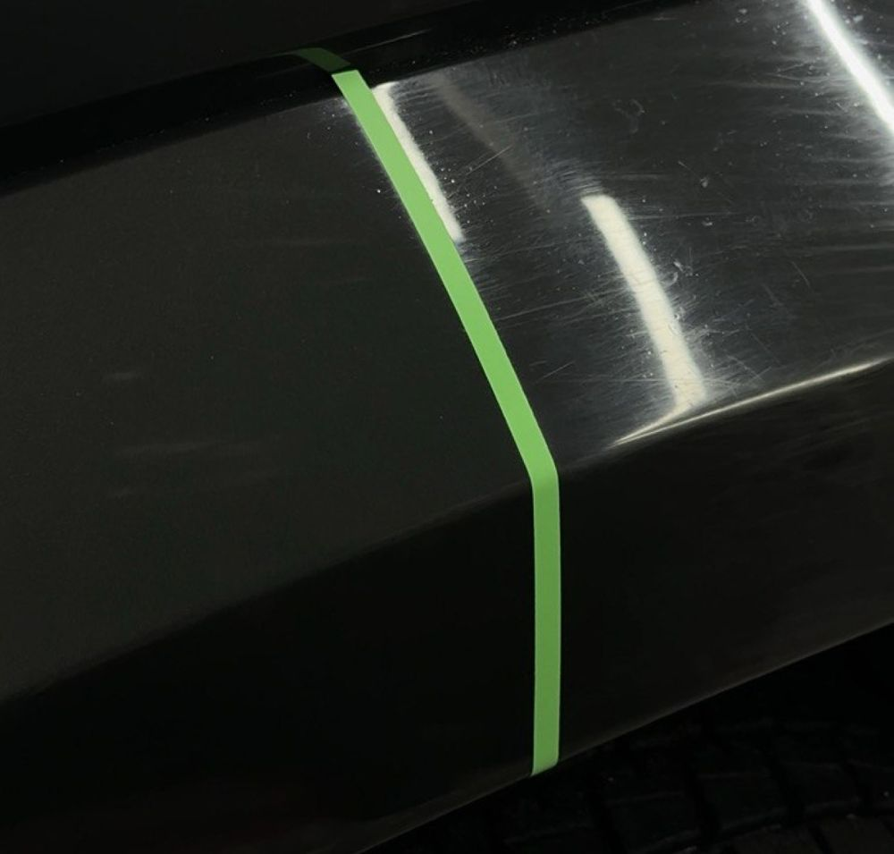
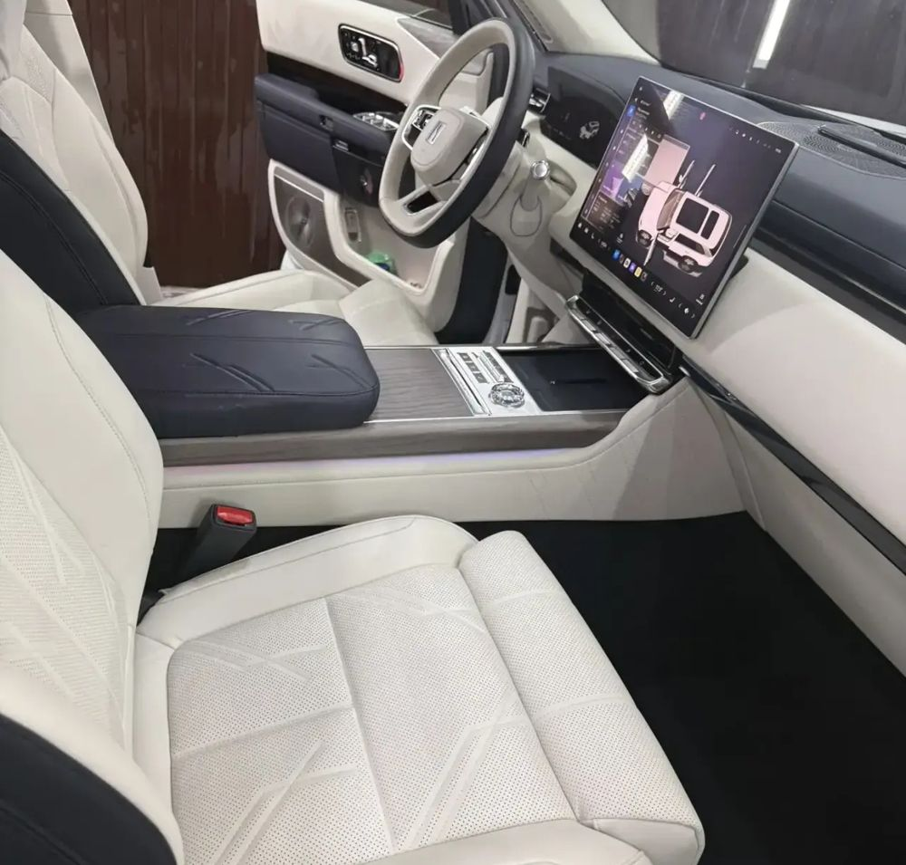

Комплексная мойка
Полная мойка машины за один визит. От 800 ₽.


Полная мойка машины за один визит. От 800 ₽.

Активная пена снимает грязь и реагенты с кузова без губки.

Убираем паутинку и мелкие царапины, лак снова блестит.

Чистим сиденья и салон, внутри снова чисто и свежо.
Можно подождать машину у нас, есть кофе и чай с собой.
Карту можно получить бесплатно прямо на мойке.
Комплексная мойка от 800 ₽. Остальное зависит от машины и объёма работ, точную сумму скажем в сообщении.
Можно записаться заранее на удобное время.
Посёлок Пионерский, улица Виталия Бонивура, 1 ст1. Работаем каждый день с 10:00 до 21:00.
Напишите марку и модель машины и что нужно: мойка, полировка или химчистка.